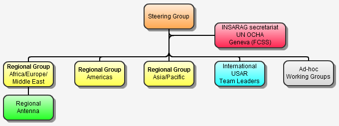

The INSARAG is composed of a series of fora and geographical regions that all report upward with and through the overarching global elements of the Steering Group. This structure ensures all aspects of the INSARAG’s aim can be achieved at a regional level while still ensuring they are in line with best practise as defined and agreed by the global group.

INSARAG Steering Group
The INSARAG is directed by a Steering Group. This group meets annually and consists of INSARAG Chairman, INSARAG Regional Group’s Chairs and Vice-Chairs, the national focal points of INSARAG External Classification (IEC) classified countries, Chairs of any relevant INSARAG ad-hoc Working Groups and the INSARAG Secretariat. The INSARAG Steering Group governs the process of approving INSARAG advice and as such is the final check ensuring actions and advice published by the group are agreed by the group as a whole.
INSARAG Secretariat
Through structured reporting the INSARAG Secretariat facilitates coordinated communications between the different elements of INSARAG including channelling through the INSARAG Steering Group as required. On the practical side, the Secretariat ensures all events are arranged in cooperation with identified hosts. The Secretariat also administers the INSARAG website and the INSARAG USAR Directory.The Secretariat is hosted in the Emergency Response Section (ERS) of the Response Support Branch (RSB) (which was called in the past "Field Coordination Support Section of the Emergency Services Branch") of the United Nations Office for the Coordination of Humanitarian Affairs (OCHA) in Geneva.
INSARAG Regional Groups
The INSARAG is organised into the three regional groups: Africa/Europe/Middle East, Americas, and Asia/Pacific. In addition to regional events such as exercises, these Regional Groups also meet annually to agree on actions required to strengthen regional USAR response and ensure the strategic direction and policies from the INSARAG Steering Group are implemented. This meeting also serves as a channel for collection of relevant information from participating countries for submission to the INSARAG Steering Group. Each Regional Group has at least one Regional Chair and Regional Vice-Chair. (For more information about Regional Groups, please refer to the Regional Groups pages).
As required, the INSARAG Steering Group may decide to create an INSARAG Regional Antenna. An INSARAG Regional Antenna is established and hosted by an INSARAG member country with the aim of enhancing the capacity of the INSARAG network in that region. Currently, there is only one INSARAG Regional Antenna for the INSARAG Africa/Europe/Middle East Regional Group (For more information regarding the INSARAG Regional Antenna, please refer to the INSARAG Africa/Europe/Middle East Regional Group pages).
INSARAG Working Groups
Task specific Ad-hoc Working Groups are established at the request of the INSARAG Steering Group. The purpose of these working groups is to develop solutions to specific issues identified by the INSARAG. On completion of the task, the group disbands.
International USAR Team Leaders
This cross regional network of experienced international USAR practitioners meets annually. These meetings provide a forum to discuss technical issues relating to training and best practice based on lessons learned from previous USAR operations and exercises. The collective input, advice and experience of this group serve to improve the operational capabilities of international USAR response.